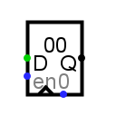
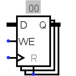

Регистр
Регистр
| Библиотека: |
Память |
| Введён в: |
2.0 Beta 1 |
| Внешний вид: |
| Logisim |
Evolution |
 |
 |
|
Поведение
Регистр хранит одно многобитное значение, которое отображается в шестнадцатеричном виде внутри его прямоугольника, и выдаётся на его выход Q. При срабатывании тактового входа (отмеченного треугольником на нижней стороне), значение, хранящееся в регистре, меняется в этот момент на значение на входе D. Момент срабатывания тактового входа настраивается атрибутом «Срабатывание».
Вход Сброс асинхронно сбрасывает значение регистра на 0 (все нули), кроме того, пока на входе Сброс 1, значение фиксировано на 0, вне зависимости от тактового входа.
Контакты
- Правая сторона, отмечена Q (выход, разрядность соответствует атрибуту Биты данных)
- Выдаёт значение, хранящееся в данный момент в регистре.
- Левая сторона, отмечена D (вход, разрядность соответствует атрибуту Биты данных)
- Вход данных: в момент, когда значение на тактовом входе изменяется с 0 на 1, значение регистра меняется на значение входа D.
- Левая сторона, отмечена en (вход, разрядность равна 1)
- Включение: когда на этом входе 0, срабатывания тактового входа игнорируются. Текущее значение по-прежнему поступает на выход. Срабатывания тактового входа включаются, когда значение этого входа 1 или не определено.
- Нижняя сторона, отмечена треугольником (вход, разрядность равна 1)
- Тактовый вход: в момент, когда значение на этом входе изменяется с 0 на 1 (фронт), значение регистра обновляется на значение входа D.
- Нижняя сторона, отмечена 0 (вход, разрядность равна 1)
- Асинхронный сброс: если на этом входе 0 или неопределённое значение, то он не имеет эффекта. Пока на нём 1, значение регистра фиксируется на 0. Это происходит асинхронно - то есть вне зависимости от текущего значения на тактовом входе. Пока на нём 1, другие входы не имеют эффекта.
Атрибуты
Когда компонент выбран, или уже добавлен, комбинации от Alt-0 до Alt-9 меняют его атрибут Биты данных
.
- Биты данных
- Разрядность значения, хранящегося в регистре.
- Срабатывание
- Определяет, как обрабатывается тактовый вход. Значение
Фронт
означает, что регистр должен обновляться в момент, когда значение на тактовом входе меняется с 0 на 1. Значение Спад
означает, что он должен обновляться, когда значение на тактовом входе меняется с 1 на 0. Значение Высокий уровень
означает, что регистр должен обновляться непрерывно, пока на тактовом входе 1. И значение Низкий уровень
означает, что он должен обновляться непрерывно, пока на тактовом входе 0.
- Метка
- Текст внутри метки, привязанной к регистру.
- Шрифт метки
- Шрифт, которым отрисовывается метка.
Поведение Инструмента «Нажатие»
Нажатие на регистре переводит фокус ввода клавиатуры на регистр (это отображается красным прямоугольником), и ввод шестнадцатеричных цифр будет менять значение, хранящееся в регистре.
Назад к справке по библиотеке